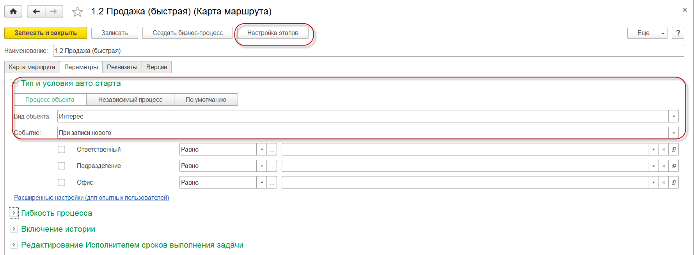
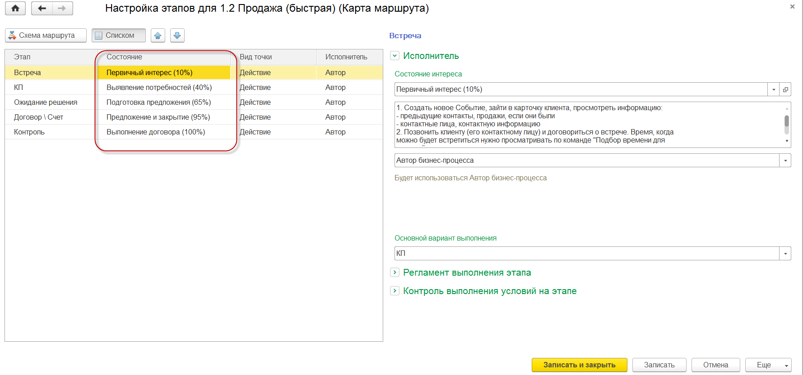
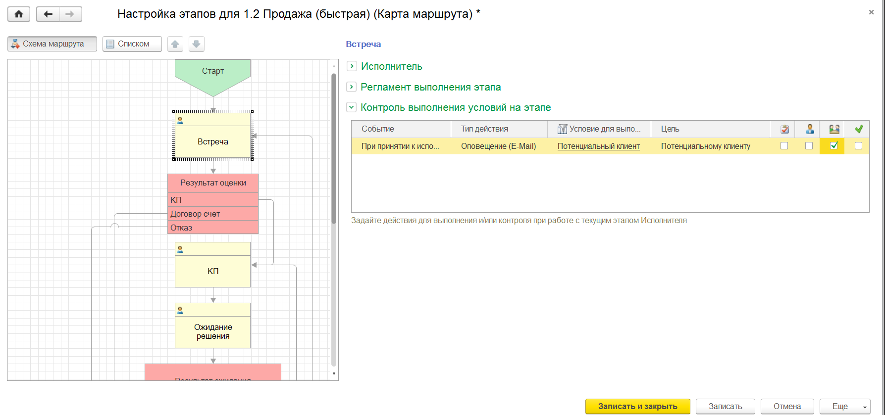
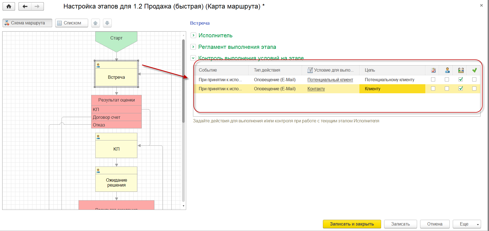
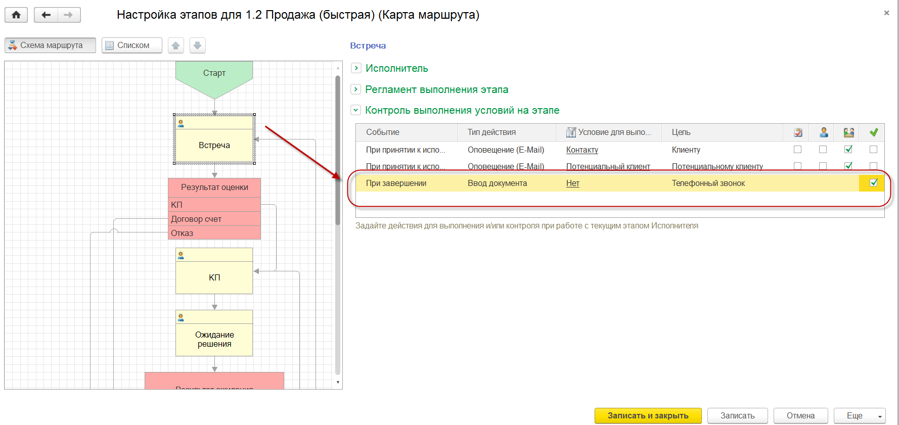

В решениях "1С: CRM" для улучшения процесса продаж используются объекты “Карта маршрута” и “Процесс”. Именно в этих объектах будем выполнять все необходимые настройки.
Важно! Для использования бизнес-процессов необходимо зайти в раздел "Настройки - Настройки системы - Бизнес-процессы" и в открывшейся форме установить галочку "Использовать бизнес-процессы и задачи". Использование механизма бизнес-процессов доступно только в версиях "ПРОФ" и "КОРП" решений "1С: CRM".
Подключение бизнес-процесса к документу "Интерес"
Подключим к документу "Интерес" бизнес-процесс и на первом этапе этого процесса настроим отправку оповещения по шаблону только для потенциальных клиентов. Для этого используем уже имеющуюся карту маршрута "1.2 Продажа (быстрая)". Для этого зайдем в раздел "Процессы - Справочники и настройки - Карты маршрутов бизнес-процессов". Схему в выбранном процессе оставляем без изменений и в открывшейся форме перейдем на закладку "Параметры", где укажем:

Рисунок № 1. Указание настроек карты маршрута
Необходимо связать этапы выбранной карты маршрута и состояния, которые настроены в документе "Интерес". Для этого выберем команду "Настройка этапов" и в открывшейся форме проставим соответствия этапов и состояний документа "Интерес", как показано на Рисунке № 2.

Рисунок № 2. Сопоставление состояние документа "Интерес" и этапов карты маршрута
При необходимости уточняем в группах "Исполнитель" и "Регламент выполнения этапа" для каждого из этапов реквизиты. В нашем случае оставляем все по умолчанию и выбираем команду "Записать и закрыть".
У карты маршрута имеется важный реквизит "Состояние". Карта маршрута будет использоваться в решении, если у неё установлено состояние в значение "Действует". При остальных состояниях такая карта задействована НЕ будет. Указываем состояние в значение "Действует" у созданной карты маршрута и закрываем ее сохраняя сделанные изменения.
С указанными выше настройками при создании документов "Интерес" будет автоматически страртовать бизнес-процесс и менеджеры в форме документа будут работать уже по назначенной Интересу карте марщрута.
Вы подключили к документу "Интерес" бизнес-процесс!
Вы сделали #IT просто! :)
Улучшение: Настройка email оповещения для потенциального клиента
После подключения к документу "Интерес" уже можно приступить к первому улучшению - настроим оповещение для потенциального клиента при создании Интереса. Для этого зайдем в раздел "Процессы - Справочники и настройки - Карты маршрутов бизнес-процессов" и откроем уже имеющуюся карту маршрута "1.2 Продажа (быстрая)". В открывшейся форме выберем команду "Настройка этапов" и выделем самый первый этап в карте "Встреча" и справа в группе "Контроль выполнения условий на этапе" введем по команде из контекстного меню следующее условие:

Рисунок №3. Условия отправки оповещения потенциальному клиенту

Рисунок №4. Результат настройки оповещения для потенциального клиента
У карты маршрута имеется важный реквизит "Состояние". Карта маршрута будет использоваться в решении, если у неё установлено состояние в значение "Действует". При остальных состояниях такая карта задействована НЕ будет. Указываем состояние в значение "Действует" у созданной карты маршрута и закрываем ее сохраняя сделанные изменения: выбираем команду "Записать и закрыть".
С этого момента при создании нового документа "Интерес" в котором указан потенциальный клиент будет автоматически отправляться оповещение email по настроенному шаблону. Все документы, в том числе отправленные автоматически, отображаются в документе "Интерес".
Важно! Оповещения могут отправляться только, если у потенциального клиента будет укзаан email. Для контактов оповещения отправляются, если заполнен адрес в виде контактной информации "Email для рассылки". SMS оповещение отправляются, если для контактов указан вид контакной информации "Сотовый телефон".
Улучшение: Настройка email оповещения для существующего клиента
После подключения к документу "Интерес" уже можно приступить к следующему улучшению - настроим оповещение для существующего клиента при создании документа "Интерес". Для этого зайдем в раздел "Процессы - Справочники и настройки - Карты маршрутов бизнес-процессов" и откроем уже имеющуюся карту маршрута "1.2 Продажа (быстрая)". В открывшейся форме выберем команду "Настройка этапов" и выделем самый первый этап в карте "Встреча" и справа в группе "Контроль выполнения условий на этапе" введем по команде из контекстного меню следующее условие:
 )
)
Рисунок №5. Условия отправки оповещения существующему клиенту

Рисунок № 6. Результат настройки оповещения для существующего клиента
У карты маршрута имеется важный реквизит "Состояние". Карта маршрута будет использоваться в решении, если у неё установлено состояние в значение "Действует". При остальных состояниях такая карта задействована НЕ будет. Указываем состояние в значение "Действует" у созданной карты маршрута и закрываем ее сохраняя сделанные изменения: выбираем команду "Записать и закрыть".
С этого момента при создании нового документа "Интерес" в котором указан потенциальный клиент будет автоматически отправляться оповещение email по настроенному шаблону. Все документы, в том числе отправленные автоматически, отображаются в документе "Интерес".
Улучшение: Определим обязательные действия менеджеров при ведение продажи
После подключения к документу "Интерес" уже можно приступить к следующему улучшению - настроим обязательные действия для выполнения менеджерами при работе с документом "Интерес". Для этого зайдем в раздел "Процессы - Справочники и настройки - Карты маршрутов бизнес-процессов" и откроем уже имеющуюся карту маршрута "1.2 Продажа (быстрая)". В открывшейся форме выберем команду "Настройка этапов" и выделем самый первый этап в карте "Встреча". На данном этапе нужно наладить контакт с клиентом: укажем, что обязательно должен быть совершен телефонный звонок, при этом менеджеру необходиом буде внести в CRM систему контактную информацию - телефонный номер. Для этого в открывшейся форме справа в группе "Контроль выполнения условий на этапе" введем по команде из контекстного меню следующее условие:

Рисунок № 7. Результат настройки на этапе "Встреча" обязательного ввода документа "Телефонный звонок"
Подобные условия выполним для всех остальных этапов, а именно:
В результате мы создали систему в которой менеджер до этапа "Контроль" совершает 5 касаний с клиентом. Их может быть больше, но уже точно не меньше.
У карты маршрута имеется важный реквизит "Состояние". Карта маршрута будет использоваться в решении, если у неё установлено состояние в значение "Действует". При остальных состояниях такая карта задействована НЕ будет. Указываем состояние в значение "Действует" у созданной карты маршрута и закрываем ее сохраняя сделанные изменения: выбираем команду "Записать и закрыть".
Дальнейшая работа менеджера с документом "Интерес" описана в разделе Ведение взаимодействий с клиентами, их планирование>>>
С помощью простых настроек Вы улучшили текущий бизнес-процесс продаж: он стал более понятным и прозрачным!
Вы сделали #IT просто! :)